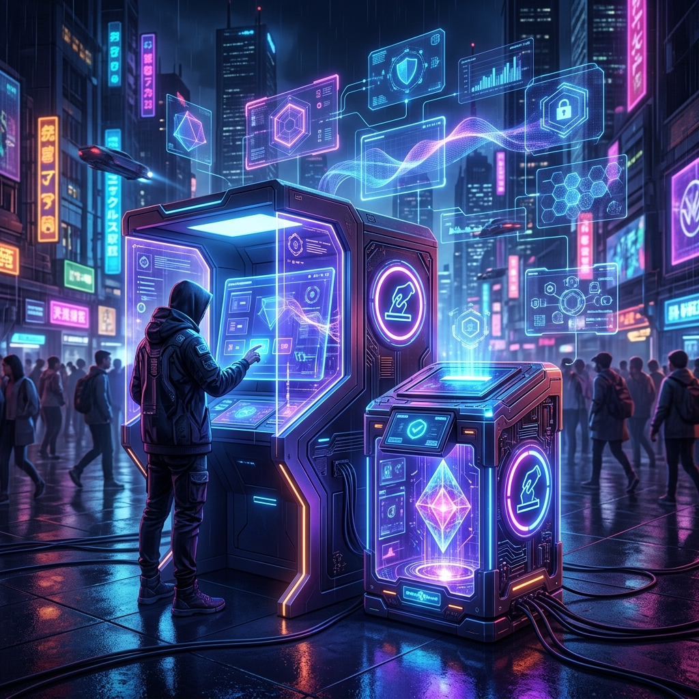
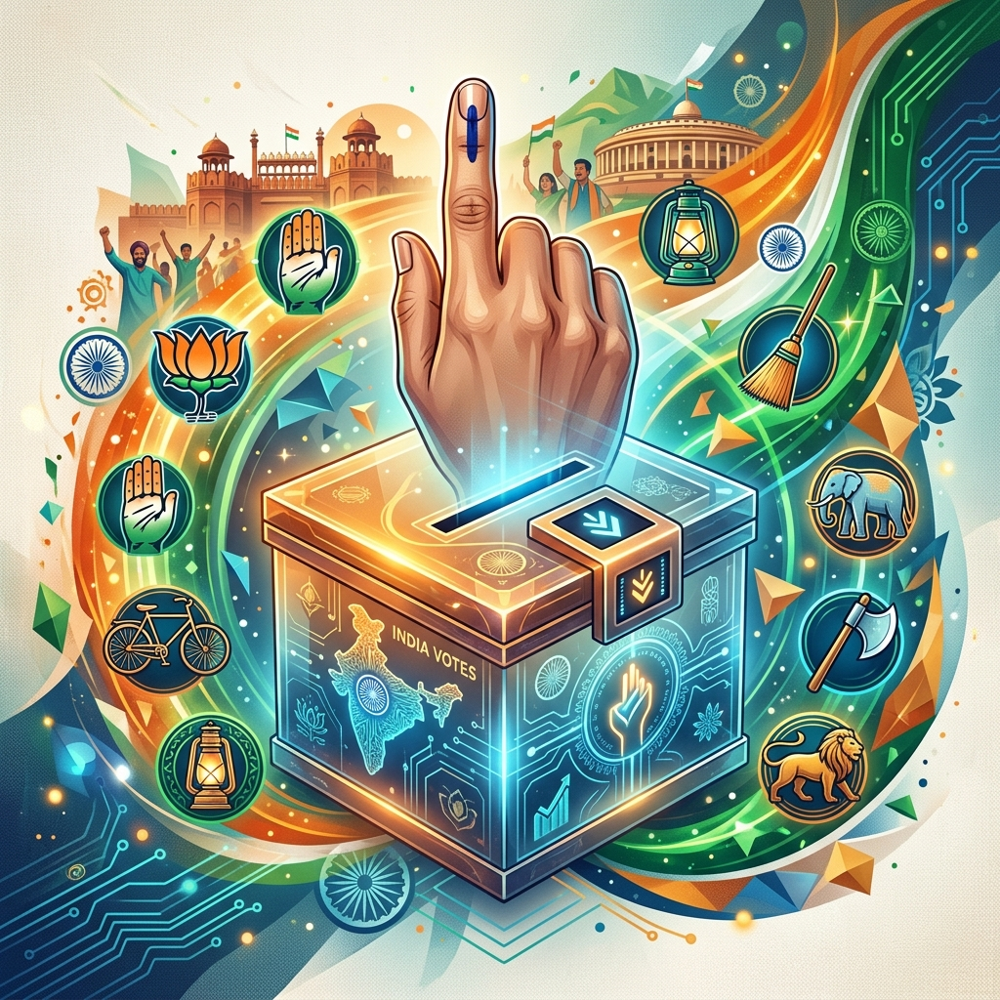
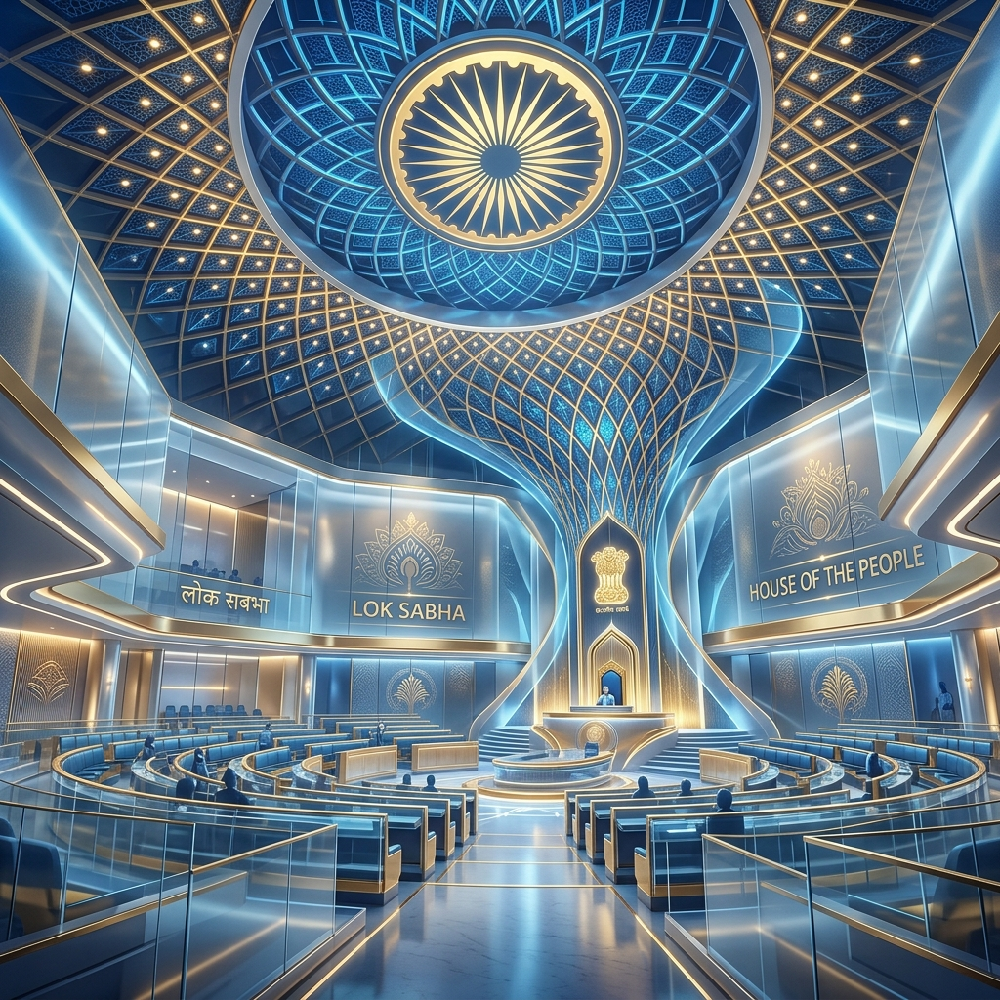
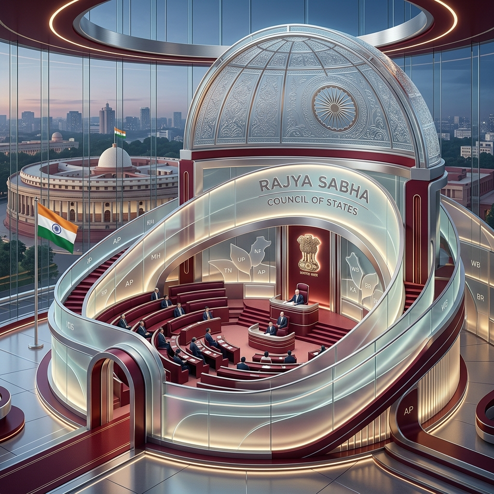
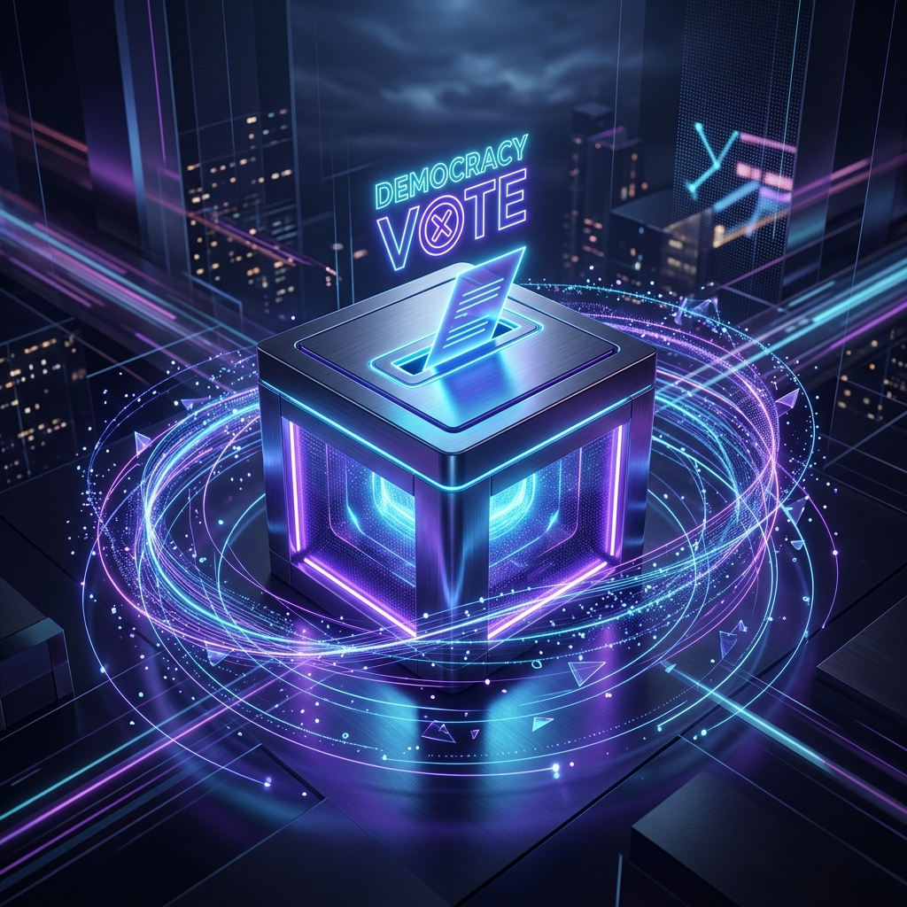
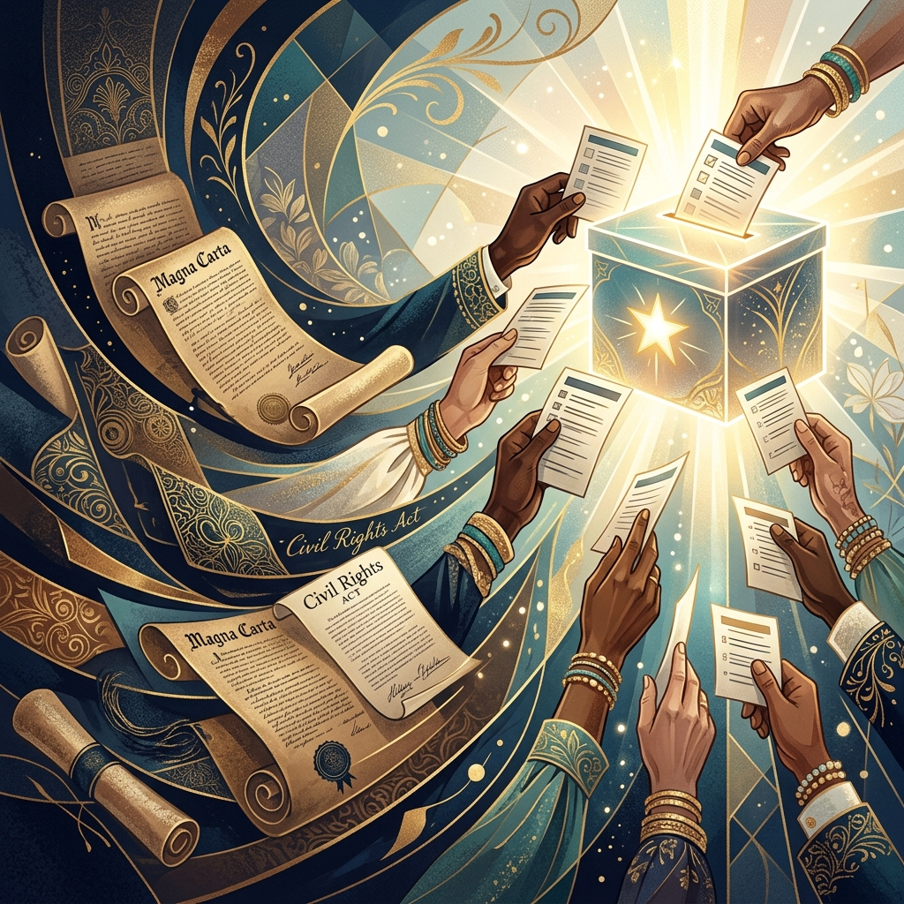

Navigate the election cycle with confidence. Get personalized steps, track key dates, and make your voice heard.

Essential knowledge for every responsible citizen.

Elections in India are conducted by the Election Commission of India.
India follows a democratic system where citizens elect their representatives.
The minimum voting age is 18 years.
Elections are held for Lok Sabha, State Assemblies, and local bodies.
Lok Sabha elections are usually held every 5 years.
India uses the First-Past-The-Post system.
Voting is done using Electronic Voting Machines (EVMs).
India has one of the largest electorates in the world.
Political parties play a major role in elections.
Free and fair elections are ensured by the Constitution of India.
Important milestones you shouldn't miss.
Now - Ongoing
Oct 20, 2026
From registration to casting your ballot.
Ensure your status is active and your details are up to date in the voter rolls.
check nowNew voter? Moved recently? Complete your registration online or via mail.
Register nowReview the candidates and measures that will appear on your specific ballot.
plan your dayFind your polling place or request a mail-in ballot to make it official.
Find your pollingStay updated with the latest happenings in Indian Democracy.

Get the latest updates on proceedings, bills, and announcements from the House of the People.
Know More
Stay informed about the debates, discussions, and legislative activities in the Council of States.
Know More
Comprehensive coverage of recent election results, upcoming polls, and voter trends across India.
Know MoreThe right to vote is the foundation of our democracy, secured through generations of advocacy and sacrifice.
The constitutional foundation of India developed through a long historical process under British rule and the freedom struggle. Early laws like the Regulating Act of 1773 and later reforms gradually introduced administrative and legislative systems. The Government of India Act 1935 became the main structural basis for the Constitution. Indian leaders such as Mahatma Gandhi and Bal Gangadhar Tilak demanded self-rule and rights. The Constituent Assembly was formed in 1946 to draft the Constitution. It included key figures like Dr. B. R. Ambedkar, who played a major role. The Constitution was influenced by various global constitutions and Indian traditions. It aimed to establish justice, liberty, equality, and fraternity. The final draft was adopted on 26 November 1949. It came into effect on 26 January 1950, making India a sovereign democratic republic.
The expansion of rights refers to the gradual increase of rights given to people over time. In earlier times, rights were limited to a few sections of society. With social reforms and movements, more people began to gain equal rights. In India, this process became strong after independence. The Constitution of India guaranteed fundamental rights to all citizens. These include rights like equality, freedom, and justice. Special provisions were made for weaker and marginalized sections. Women and minorities also received equal legal rights over time. New laws continue to expand rights in areas like education and employment. Thus, expansion of rights makes society more fair, inclusive, and democratic.
